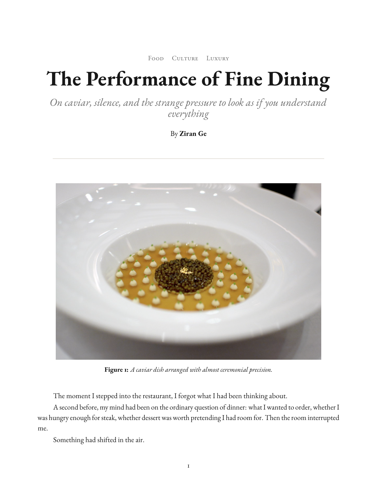
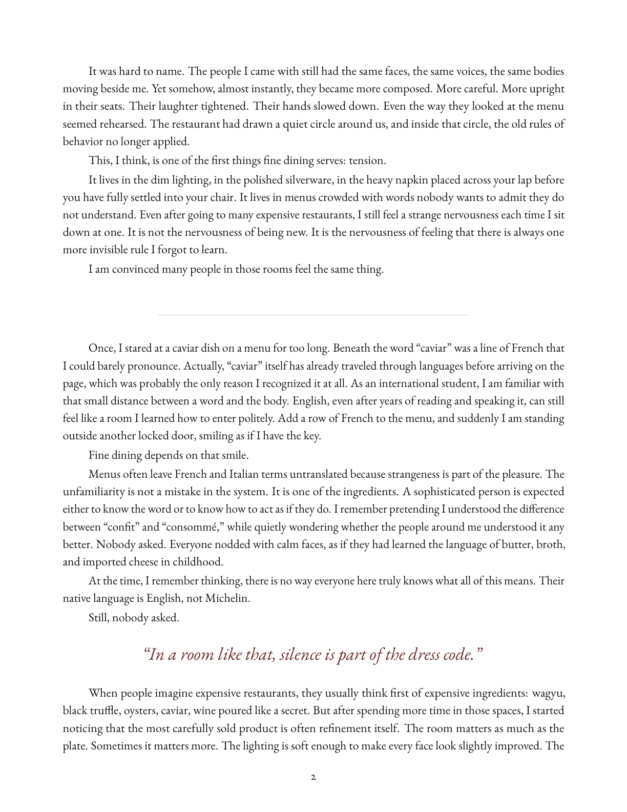
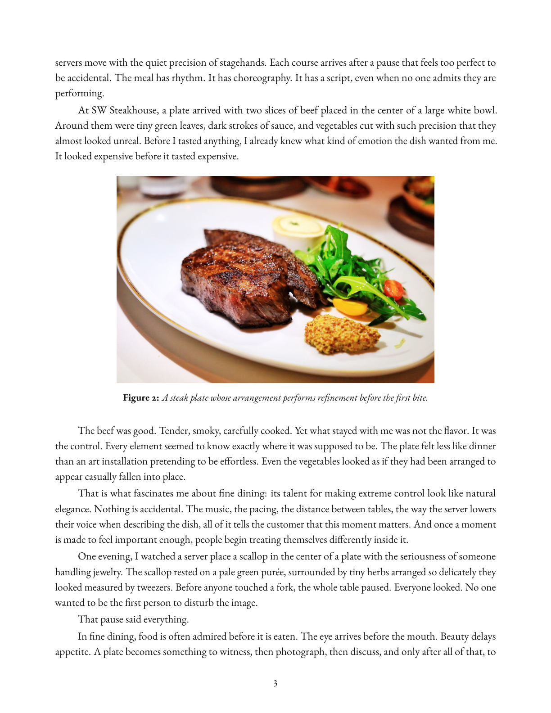
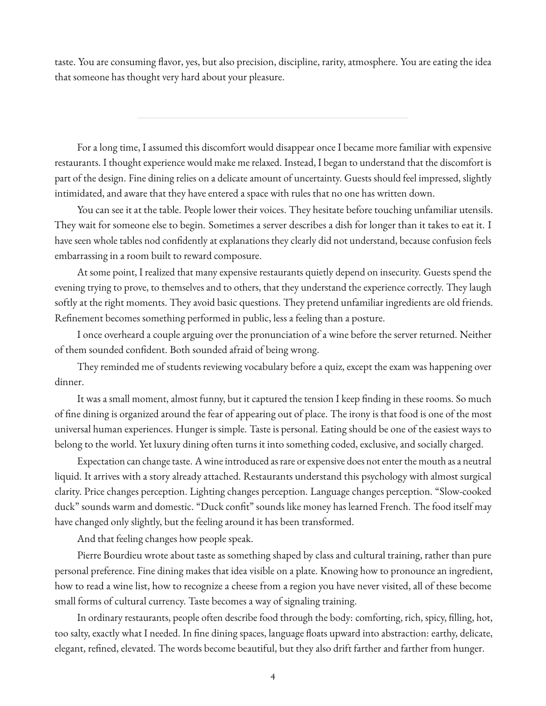
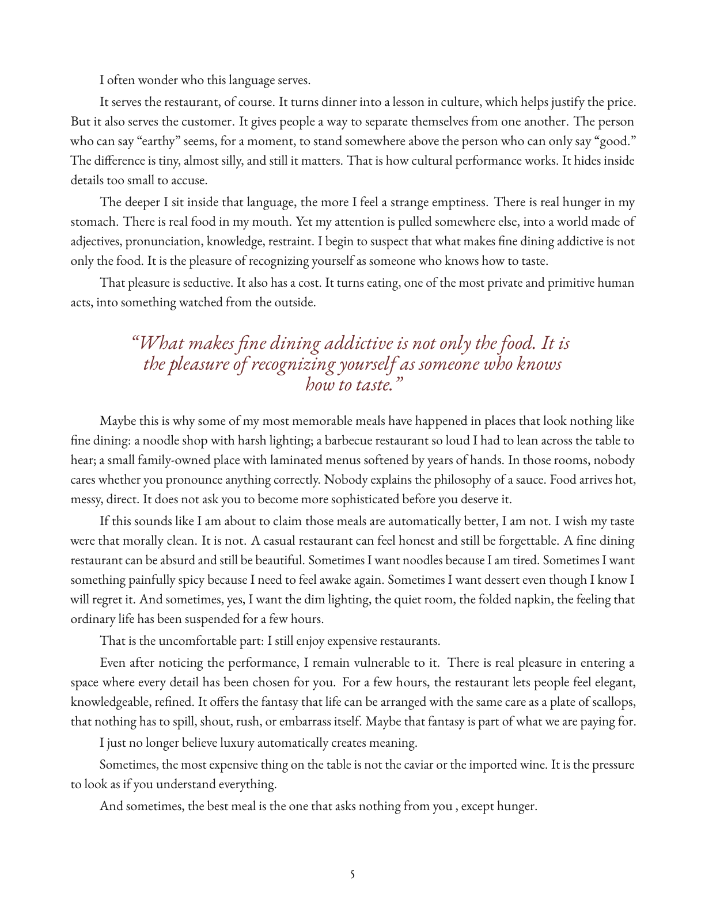
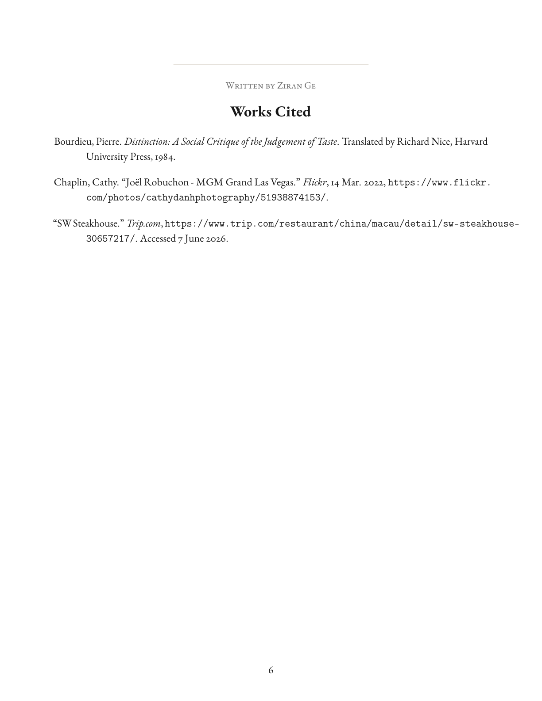

Section Two
Food Fight






After the Piece
The Food Fight essay shows growth in argument, structure, and revision. I learned to use scenes not only as description, but as evidence. I also learned that a paragraph needs a clear purpose and that the conclusion should leave the reader with a stronger understanding of why the food debate matters.
Before the Piece
This essay matters because it shows my movement from personal discomfort to structured argument. I began with a feeling about fine dining, but the final essay connects that feeling to class performance, cultural knowledge, scene-writing, and the language of taste.